Previous error code: E0119 (○ axis) Motor overloading
1.1.62.1. Outline
Motor or the drive unit is being overloaded. If motor or the drive unit is overloaded, the servo board detects an error and immobilizes the robot.
1.1.62.2. Causes and examine methods
|
(1) Please check if the Robot is loaded within its rated load.
(2) Please examine if there is a possible collision point during the Robot's operation.
(3) Please check if the axis brake works properly.
(4) Please replace the Servo Board and examine an error.
(5) Please examine if the Drive Unit operates normally. |
(1) Please check if the Robot is loaded within its rated load.
Please check if the Robot is loaded within its rated load. This error may occur if the load exceeds Robot's specification (load does not only include the tools that can be attached at the end of Robot, but also include all the cables and other components that can be attached to the Robot.
Using measuring equipment is recommended, but if it is not an option, load can be measured by using a 'load estimation function' from the controller. However this function only can measure the load of a tool that attached at the end of the Robot.
Method to estimate the load is as below.
n Enter to the load estimate function
『[F2]: System』 → 『6: Automatic constant setting』→ 『4: Load estimation function』
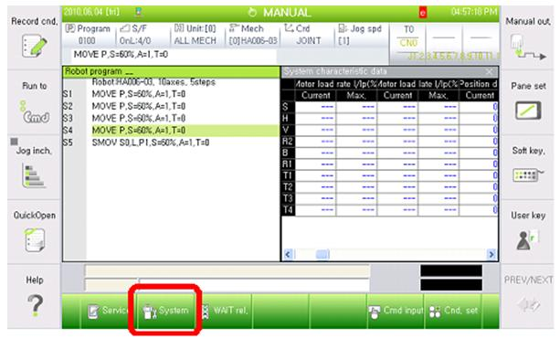
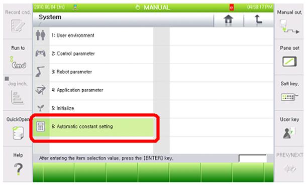
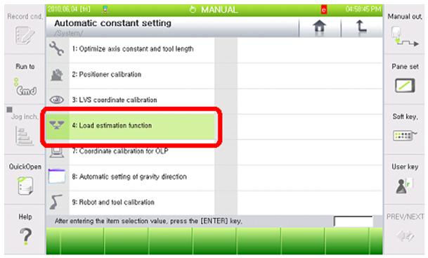
n Select the tool number, estimation method, enable status of inertia estimation from the load estimation function.
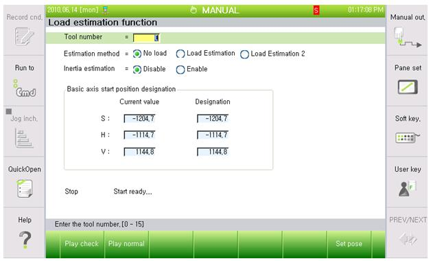
Ø Tool number to save after the load estimation
Ø Estimation method: Load estimation 2
Ø Inertia estimation: Enable
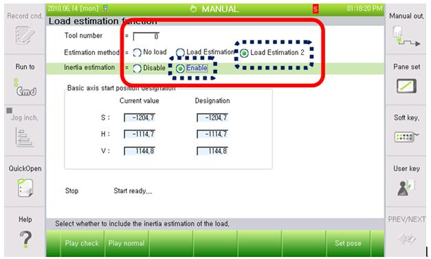
n Click Normal Drive to execute.
Press the Motor On switch, and hold the deadman and click the Play Normal.
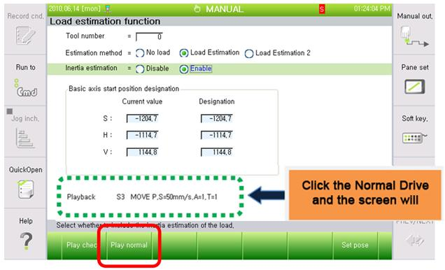
Decide if you want to register the result of load estimation.
n Once the load estimation drive has completed, the estimated result will be displayed on the screen.
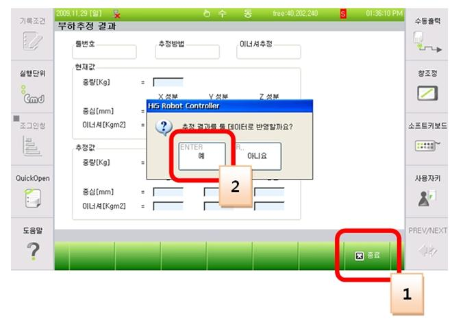
If you press the close button, a message box will appear to ask you if you want to reflect the result. If you click 'yes' it will be saved.
(2) Please examine if there is a possible collision point during the Robot's operation.
Please check if there is a point where the Robot may be interfered or have a collision in the operation area. This error may occur if the Robot is interfered by other equipment. In that case, please modify the job program so the interference will not occur.
(3) Please check if the axis brake works properly.
Brake release functions of the corresponding axis maybe have an error, or the release voltage of the brake release may have problem.
n Examine if the brake release of each axis has an error
Please remove the motor's power supply (motor OFF) and check if you can release the brake of the axis with manual brake switch. You can confirm it with the sound of brake release from the motor.
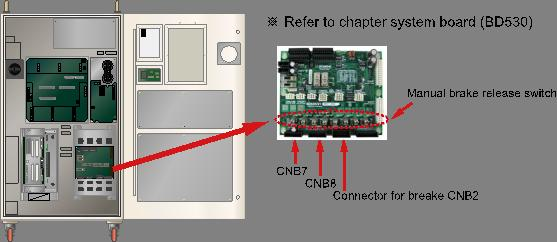
Figure 1.185 Location of the Manual Brake Release Switch
If the corresponding axis's brake cannot be released, output status of the brake release voltage in the System Board need to be examined. Please remove the brake wiring (CNB2, CNB7, CNB8 connector) and use the manual brake switch for the brake voltage's output.
Please measure the brake voltage of corresponding axis output (from the CNB2, CNB7, CNB8 connector) to check if it is over 20V. If there is an axis which has a voltage output under the 20V, System Board (BD530) is faulty. Please replace it.
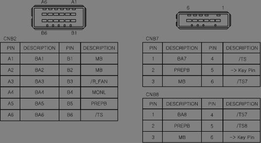
Figure 1.186 Pin Locations of CNB2, CNB7 Connectors
n Examine the error on brake's power supply.
If "E0012 Brake power error" message is displayed at the same time, there is an error on Brake's power supply unit. From TP, please access 『[F1]: Service』 →『1: Monitoring』 → 『2: Input/Output signal』 → 『1: Private input signal』 → 『Overload(Brake Power supply)』. If it is highlighted as yellow, the fuse for Brake (in the Electrical Module)'s power supply has been disconnected. Please replace the fuse.
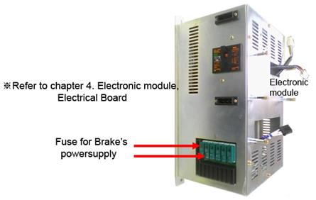
Figure 1.187 Electronic Module
If the fuse is normal, please measure the Brake power supply (DC24V) from the System Board. There are 3 test pins at the center of the board. Use the TMB as a reference terminal and the TPPB terminal value should be over DC20V. If it is below 20V, the power supply unit that generates the power for the brake has an error. Please replace the Electrical Module.
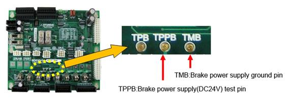
Figure 1.188 Brake Power Supply Test Pin
(4) Please replace the Servo Board and examine an error.
This error may occur if there is an error on the Servo Board. Please replace the board to check.
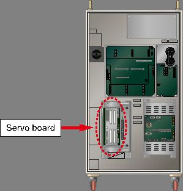
Figure 1.189 Replacing the servo board
(5) Please examine if the Drive Unit operates normally.
Please check if the Drive Unit of corresponding axis (Motor, Decelerator) works properly.
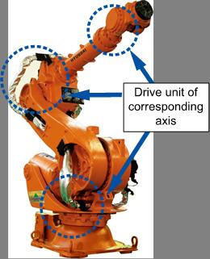
Figure 1.190 Check the normal operation of the drive unit